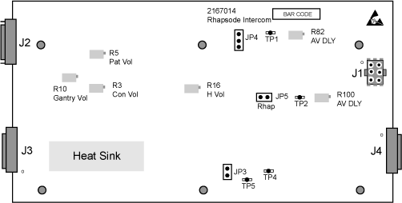
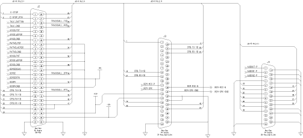

Operating Documentation
Direction 5114045-800, Rev# 10
LightSpeed 4.X Service Information (Advanced)
Operating Documentation |
The Intercom board provides two functions: 1) voice messaging and control, and 2) communications feed-through.
Illustration 1: Console Intercom Board (2167014) Physical Layout

Autovoice messages are sent simultaneously to the gantry and table speakers and the console speaker, except when the talk button is depressed. The gantry microphone is disabled during autovoice. The user at the operator’s console is always able to talk to the patient via the intercom. The patient on the table can hear the operator at the console when the operator depresses the talk button. The autovoice message is disconnected when the talk button is pressed.
The user at the operator’s console is always able to hear the patient on the table through the intercom, even at the lowest volume setting, except when the talk button is depressed or while autovoice is being played. A volume control knob is provided at the console to regulate the sound volume of Autovoice messages played back to the gantry or table. The autovoice volume at the console is controlled by a graphical user interface tool on the computer screen. In addition, two other volume control knobs for the intercom system shall be provided to adjust sound level for the speakers at the gantry/table and the console.
Computer based training (CBT) audio playback is available at the console only. Volume is controlled on screen. CBT audio cannot be played if the talk button is pressed or when autovoice is playing.
Patient voice signals from the Gantry Intercom circuit are supplied to the Console Intercom board, using differential line driver amplifiers. This helps eliminate common mode noise, which may be induced in the interconnection cables. To complete the signal to noise improvement process, the differential voice signals are received by a differential input amplifier that discriminates against any common mode signal.
Two sections of module U14 are used for impedance matching to the inputs at J3-11 and J3-30, and for establishing a local ground reference. Module U8 is the differential amplifier that provides conversion from differential mode to single ended mode. Module U8 provides more than 70 dB of differential to common mode signal discrimination. A third section of U14 provides a gain of 2.2 and impedance matching to drive the High side of the console 5k ohm volume control potentiometer through J2-11.
AutoVoice signals at J4-3 are processed by three sections of U17, with unity gain to drive TP2 and the switching matrix.
AutoVoice signals at J4-2 are processed by three sections of U18, with unity gain to drive the High side of the 5k ohm AutoVoice volume control through J2-5 as signal AVVOLPOT. A section of U11 provides a gain of 3.2 as signal AV_VOL.
The AV_VOL signal is fed into an active peak detector circuit formed by two sections of U11. The discharge time constant is adjusted by potentiometer R100. The resulting DC voltage is amplified by a third section of U11 to produce the “No Signal” = -5VDC, or the “600mv Signal” = +5VDC, control signal found at TP3. The DC signal is shifted by U7 to provide 5 volt drive for NOR gate U9, which provides a Low signal OC_CNTL to the switching logic.
Voice signals from the Operator Console microphone are brought to the input of module U2 through J2-14, J2-15 and J2-16. The signal amplitude at J2-15 is multiplied by ten in amplifier U2 at Pin 8, for input to U13. Microphone Pre-amplifier U13 provides variable signal gain and compression to reduce variation in patient volume as the console operator moves around the console microphone.
Another section of U2 provides impedance matching at Pin 14, to drive the 5k ohm Patient Volume Control through J2-8. A third section of U2 provides impedance matching at Pin 7 for driving Balanced line driver U3 with output on pins on 1 and 8. VR1 is a +5 volt voltage regulator that determines the break point for signal compression in U13.
Signals coming from the volume control wipers are switched by U16 and appear as inputs to the power amplifier section formed by U15 and U12. TP4 is connected to the output of U15 pin 1 and provides an opportunity to monitor the voice signals being sent from the patient. TP5 is connected to the output of U15 pin 7 and provides an opportunity to monitor the voice signals coming from the console. Both of these signals are imposed on the input terminals of power amplifier chip U12.
Signal OCSPK from U2 pin 4 drives the console speaker through J2-17. Signal PSPK from U12 pin 6 drives the patient speaker through J2-12.
Power for the board is obtained through connector J1. J1 pins 2 and 3 are connected to Analog ground. Pin 1 is connected to Logic ground. Pin 4 supplies +12 vdc. Pin 5 supplies + 5 vdc. Pin 6 supplies -12 vdc. Module U1 is a voltage regulator that derives + 6 vdc, for Microphone bias, from the +12 vdc supply.
Connectors J2, J3 and J4 provide for interconnection of a number of circuits that have little or no functional relationship to the intercom feature. These interconnection paths from connector to connector are continuous conductors that can be checked by continuity measurement.
| NOTE: | For a full size version of this illustration, click on the PDF icon below. |
Media File 1: Full Size Illustration: Intercom Board - Schematic

Illustration 2: Intercom Board - Schematic
